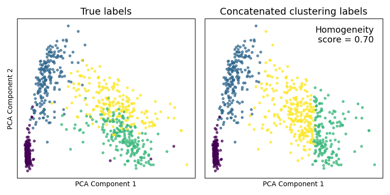
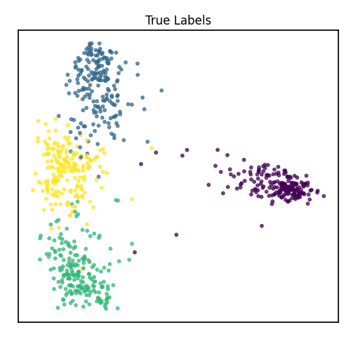

Note
Click here to download the full example code
Multiview vs. Singleview Spectral Clustering of UCI Multiview Digits¶
Here, we directly compare multiview methods available within mvlearn to analagous singleview methods. Using the UCI Multiple Features Dataset, we first examine the dataset by viewing it after using dimensionality reduction techniques, then we perform unsupervised clustering and compare the results to the analagous singleview methods.
# License: MIT
from sklearn.cluster import SpectralClustering
from sklearn.metrics import homogeneity_score
from mvlearn.cluster import MultiviewSpectralClustering
from sklearn.decomposition import PCA
from mvlearn.plotting import quick_visualize
from sklearn.metrics import confusion_matrix
from mvlearn.datasets import load_UCImultifeature
import numpy as np
import matplotlib.pyplot as plt
# Load 6-view, 4-class data from the Multiple Features Dataset. The full 6
# views with all features will be used for clustering.
# Load 4-class, multiview data
Xs, y = load_UCImultifeature(select_labeled=[0, 1, 2, 3])
# Six views of handwritten digit images
# 1. 76 Fourier coefficients of the character shapes
# 2. 216 profile correlations
# 3. 64 Karhunen-Love coefficients
# 4. 240 pixel averages of the images from 2x3 windows
# 5. 47 Zernike moments
# 6. 6 morphological features
view_names = ['Fourier\nCoefficients', 'Profile\nCorrelations',
'Karhunen-\nLoeve', 'Pixel\nAverages',
'Zernike\nMoments', 'Morphological\nFeatures']
order = np.argsort(y)
sub_samp = np.arange(0, Xs[0].shape[0], step=3)
set_aspect = 'equal'
set_cmap = 'Spectral'
for i, view in enumerate(Xs):
sorted_view = view[order, :].copy()
sorted_view = sorted_view[sub_samp, :]
if set_aspect == 'auto':
plt.figure(figsize=(1.5, 4.5))
else:
plt.figure()
# Scale matrix to [0, 1]
minim = np.min(sorted_view)
maxim = np.max(sorted_view)
sorted_view = (sorted_view - minim) / (maxim - minim)
plt.imshow(sorted_view, cmap=set_cmap, aspect=set_aspect)
plt.title(view_names[i], fontsize=14)
plt.yticks([], "")
max_dim = view.shape[1]
plt.xticks([max_dim-1], [str(max_dim)])
if i == 0:
plt.ylabel('Samples')
if i == 5:
plt.colorbar()
plt.xlabel('Features')
plt.show()
# Define a function to rearrange the predicted labels so that the predicted
# class '0' corresponds better to the true class '0'. This is only used so that
# the colors generated by the labels in the prediction plots can be more easily
# compared to the true labels.
def rearrange_labels(y_true, y_pred):
conf_mat = confusion_matrix(y_true, y_pred)
maxes = np.argmax(conf_mat, axis=0)
y_pred_new = np.zeros_like(y_pred)
for i, new in enumerate(maxes):
y_pred_new[y_pred == i] = new
return y_pred_new


- 

Comparing Dimensionality Reduction Techniques¶
# As one might do with a new dataset, we first visualize the data in 2
# dimensions. For multiview data, rather than using PCA, we use Multiview
# Multi-dimensional Scaling (MVMDS) available in the package to capture the
# common principal components across views. This is performed automatically
# within the quick_visualize function. From the unlabeled plot, it is clear
# that there may be 4 underlying clusters, so unsupervised clustering with 4
# clusters may be a natural next step in analyzing this data.
# Use all 6 views available to reduce the dimensionality, since MVMDS is not
# limited
sca_kwargs = {'alpha': 0.7, 's': 10}
quick_visualize(Xs, title="Unlabeled", ax_ticks=False,
ax_labels=False, scatter_kwargs=sca_kwargs)
quick_visualize(Xs, labels=y, title="True Labels", ax_ticks=False,
ax_labels=False, scatter_kwargs=sca_kwargs)
# As a comparison, we concatenate the views and use PCA to reduce the
# dimensionality. From the unlabeled plot, it is much less clear how many
# underlying classes there are, so PCA was not as useful for visualizing the
# data if our goal was to determine underlying clusters.
# Concatenate views to get naive single view
X_viewing = np.hstack([Xs[i] for i in range(len(Xs))])
# Use PCA for dimensionality reduction on the naive single view
pca = PCA(n_components=2)
pca_X = pca.fit_transform(X_viewing)
plt.figure(figsize=(5, 5))
plt.scatter(pca_X[:, 0], pca_X[:, 1], **sca_kwargs)
plt.xticks([], [])
plt.yticks([], [])
plt.tight_layout(rect=[0, 0.03, 1, 0.95])
plt.title("Unlabeled")
plt.show()
plt.figure(figsize=(5, 5))
plt.scatter(pca_X[:, 0], pca_X[:, 1], c=y, **sca_kwargs)
plt.xticks([], [])
plt.yticks([], [])
plt.tight_layout(rect=[0, 0.03, 1, 0.95])
plt.title("True Labels")
plt.show()
- 

Comparing Clustering Techniques using the Full Feature Space¶
# Now, assuming we are trying to group the samples into 4 clusters (as was
# much more obvious after using *mvlearn*'s dimensionality reduction viewing
# method), we compare multiview clustering techniques to singleview
# counterparts. Specifically, we compare 6view spectral clustering in *mvlearn*
# with single view spectral clustering from *scikit-learn*. For multiview
# clustering, all 6 full views of data (not the dimensionality-reduced data).
# For singleview comparison, we concatenate these 6 full views into a single
# large matrix, the same as what we did before for PCA.
#
# Since we have the true class labels, we assess the clustering accuracy with
# a homogeneity score.
mv_clust = MultiviewSpectralClustering(
n_clusters=4, affinity='nearest_neighbors')
mvlearn_cluster_labels = mv_clust.fit_predict(Xs)
# Test the accuracy of the clustering
mv_score = homogeneity_score(y, mvlearn_cluster_labels)
print('Multiview homogeneity score: {0:.3f}'.format(mv_score))
# Use function defined at beginning of notebook to rearrange the labels
# for easier visual comparison to true labeled plot
mvlearn_cluster_labels = rearrange_labels(y, mvlearn_cluster_labels)
# Visualize the clusters in the 2-dimensional space
quick_visualize(Xs, labels=mvlearn_cluster_labels, title="Predicted Clusters",
ax_ticks=False, ax_labels=False, scatter_kwargs=sca_kwargs)
# To compare to singleview methods, we concatenate the 6 views we used for
# co-clustering into one data matrix, and then perform spectral clustering
# using the *scikit-learn* library. From the figure and cluster scores that are
# produced, we can see that singleview spectral clustering is unable to perform
# as well as the multiview version.
# Concatenate views and cluster
X_clustering = X_viewing
clust = SpectralClustering(n_clusters=4, affinity='nearest_neighbors')
sklearn_cluster_labels = clust.fit_predict(X_clustering)
# Test the accuracy of the clustering
sk_score = homogeneity_score(y, sklearn_cluster_labels)
print('Singleview homogeneity score: {0:.3f}'.format(sk_score))
# Rearrange for easier visual comparison to true label plot
sklearn_cluster_labels = rearrange_labels(y, sklearn_cluster_labels)
# Use PCA for dimensionality reduction on the naive single view
pca = PCA(n_components=2)
pca_X = pca.fit_transform(X_viewing)
plt.figure(figsize=(5, 5))
plt.scatter(pca_X[:, 0], pca_X[:, 1], c=sklearn_cluster_labels, **sca_kwargs)
plt.xticks([], [])
plt.yticks([], [])
plt.tight_layout(rect=[0, 0.03, 1, 0.95])
plt.title("Predicted Clusters")
plt.show()
Out:
Multiview homogeneity score: 0.962
Singleview homogeneity score: 0.703
Total running time of the script: ( 0 minutes 16.598 seconds)